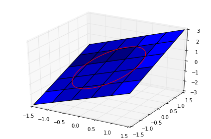
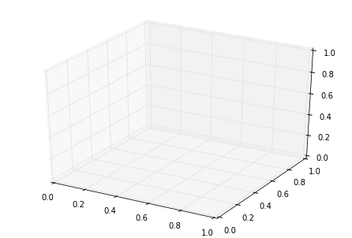
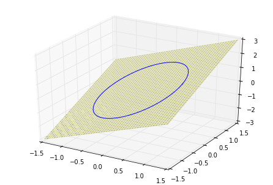
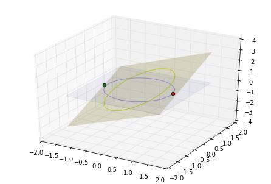

Lagrange multipliers example
Introduction
This is an experiment with org-mode and ob-python that simulates a notebok environment which mix code, text and math (latex). I am going through example presented in John Kitchin work, which is extremely useful for someone planning on start coding in python for science.
I take no credit from the material presented here, it is a copy with a new format. I am particularly interested in this subject due an ongoing project in structural optimization therefore I will put an effort on detailing some of the method derivation.
Problem statement
We seek to maximize the function
$$ f(x,y) = x+y $$
subjected to a circle constraint
$$ x^2 + y^2 = 1 $$
which can be visualized with
1import numpy as np
2
3x = np.linspace(-1.5, 1.5)
4
5[X, Y] = np.meshgrid(x, x)
6
7%matplotlib inline
8import matplotlib as mpl
9from mpl_toolkits.mplot3d import Axes3D
10import matplotlib.pyplot as plt
11
12fig = plt.figure()
13ax = fig.gca(projection='3d')
14
15ax.plot_surface(X, Y, X+Y)
16
17theta = np.linspace(0, 2*np.pi)
18R = 1.0
19x1 = np.cos(theta)
20y1 = np.sin(theta)
21
22ax.plot(x1, y1, x1+y1, 'r-')
23plt.tight_layout()
Construct the Lagrange multiplier augmented function
In order to find the maximum we construct the function
$$ \Lambda (x, y; \lambda) = f(x,y) + \lambda g(x, y) $$
where, the constraint function is
$$ g(x,y) = x^2 + y^2 - 1 =0 $$
in code:
1def func(X):
2 x = X[0]
3 y = X[1]
4 L = X[2] # the multiplier
5 return x + y + L *(x**2 + y**2 -1)Finding the partial derivatives
The maximum and minimum of the augmented function are located where all of the partial derivatives are equal to zero,
$$ \dfrac{\partial \Lambda}{\partial x} = 0 \qquad \text{and} \qquad \dfrac{\partial \Lambda}{\partial y} = 0. $$
The partial derivatives are usually obtained analytically, which can be hard depending on the function. It is more convenient to compute them numerically, this is done using finite differences
$$ \dfrac{\partial f}{\partial x} = \dfrac{f(x+\Delta x) - f(x-\Delta x)}{2 \Delta x} $$
1def dfunc(X):
2 dLambda = np.zeros(len(X))
3 h = 1e-3 # step size used in the finite differences
4 for i in range(len(X)):
5 dX = np.zeros(len(X))
6 dX[i] = h
7 dLambda[i] = (func(X + dX) - func(X - dX))/(2*h)
8 return dLambdaFinding the maximum or minimum
Setting the derivative dfunc to zero will enable was to find the maximum or minimum.
1from scipy.optimize import fsolve
2
3# the max
4X1 = fsolve(dfunc, [1, 1, 0])
5print(X1, func(X1))
6
7# the min
8X2 = fsolve(dfunc, [-1, -1, 0])
9print(X2, func(X2))[ 0.70710678 0.70710678 -0.70710678] 1.41421356237 [-0.70710678 -0.70710678 0.70710678] -1.41421356237
Plotting the result
The points found before $X_1$ and $X_2$ are the maximum and minimum, respectively, of the function $f(x,y) = x+y$ subjected to the restricted domain defined by $g(x,y) = x^2 + y^2 - 1$.
Create the Figure and Axes
The whole Figure keeps track of the child Axes and for it to be useful it needs at least one Axes. Axes is the 'plot' itself: it is the region of the image where the data will be located, it contains most of the figure elements . A given Axes object can only be in one Figure. A 3D Axes is create by calling the Axed3D class.
1fig2 = plt.figure() # create an empty figure with no axes
2ax2 = Axes3D(fig2) # create a 3D axes object
Add the data Artist: the surface $f(x,y) = x+y$
An artist is everything we see in the figure except the Axis, which are inside the Axes. The Axis are the ones that set the graph limits and generating the ticks.
In order to plot this function, which is a surface, we add to the Axes3D object ax2 a surface plot. A surface plot requires an $X, Y, Z$ values in 2D arrays. The 2D arrays are created with the numpy.meshgrid function. The input of this function are 1D arrays representing coordinates, and the output is coordinate matrices.
1fig3 = plt.figure()
2ax3 = Axes3D(fig3)
3ax3.plot_surface(X, Y, X+Y, color='y', rstride=1, cstride=1, alpha=0.5, edgecolor='w')Add the data Artist: the restriction $g(x,y) = x^2 + y^2 -1$
The restriction imposed on the problem is a limitation to the domain of $f(x, y). In this case its a circle in the plane $(x,y)$. This plot can be done by using the function Axes3D.plot() which takes the coordinates of each point individually. The next figure show a projection of the circle in the function plane.
1fig4 = plt.figure()
2ax4 = Axes3D(fig4)
3ax4.plot_surface(X, Y, X+Y, color='y', rstride=1, cstride=1, alpha=0.5, edgecolor='w')
4
5theta = np.linspace(0, 2*np.pi)
6R = 1.0
7x1 = R * np.cos(theta)
8y1 = R * np.sin(theta)
9ax4.plot(x1, y1, x1+y1)
Add the data Artist: the maximum and minimum points
For plotting points we can use the Axes3D.scatter() function which takes the position of the data as input argument.
1fig5 = plt.figure()
2ax5 = Axes3D(fig5)
3ax5.plot_surface(X, Y, X+Y, color='y', rstride=100, cstride=100, alpha=0.2, edgecolor='w')
4ax5.plot_surface(X, Y, 0, color='b', alpha=0.05, rstride=100, cstride=100)
5
6theta = np.linspace(0, 2*np.pi)
7R = 1.0
8x1 = R * np.cos(theta)
9y1 = R * np.sin(theta)
10ax5.plot(x1, y1, alpha=0.3)
11ax5.plot(x1, y1, x1+y1, c='y', alpha=0.8)
12
13ax5.scatter(X1[0], X1[1], X1[2], s=30, c='r')
14ax5.scatter(X2[0], X2[1], X2[2], s=30, c='g')
Conclusion
We can see from the last plot that the maximum and minimum point are on the edge of the restrained domain, which makes sense, since the function minimized/maximized is linear on both variables.